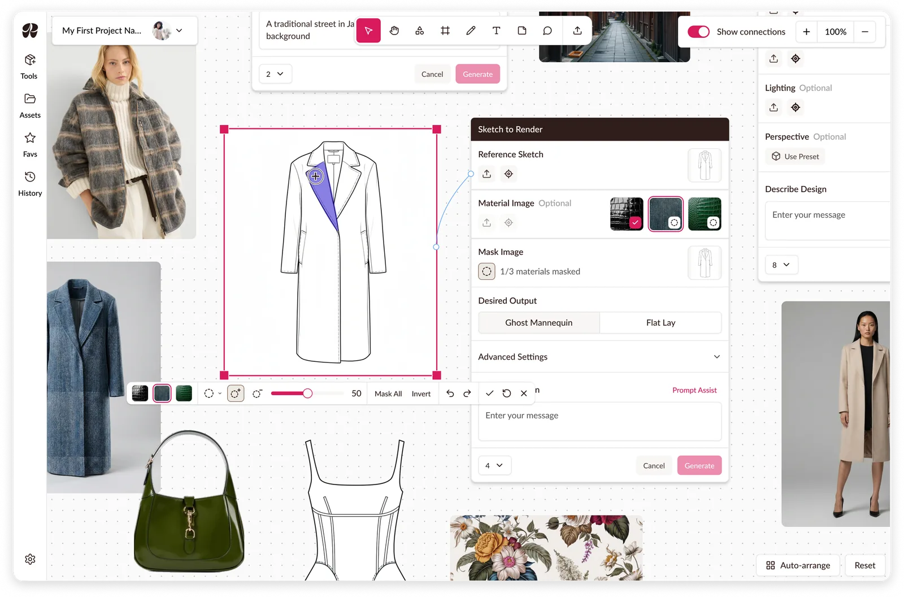
Raspberry AI: A New Way to Mask
Introduced a new interaction model that keeps fashion designers in context, speeding up their workflow.

Unified fragmented tools into guided workflows, leading 68.5% of fashion designers who start one to generate.
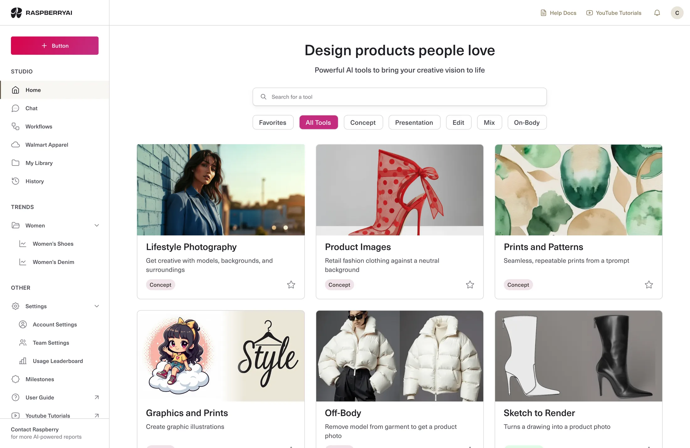
New designers didn’t start on Raspberry. They started on a call with a Raspberry rep walking them through the platform.
That call wasn’t just teaching tools. It answered a bigger question: where does this fit into how I already work? Raspberry is built as separate tools, but a designer’s work runs in workflows. At the same time, Boards was being built, a new canvas workspace that would transform how the app is used.
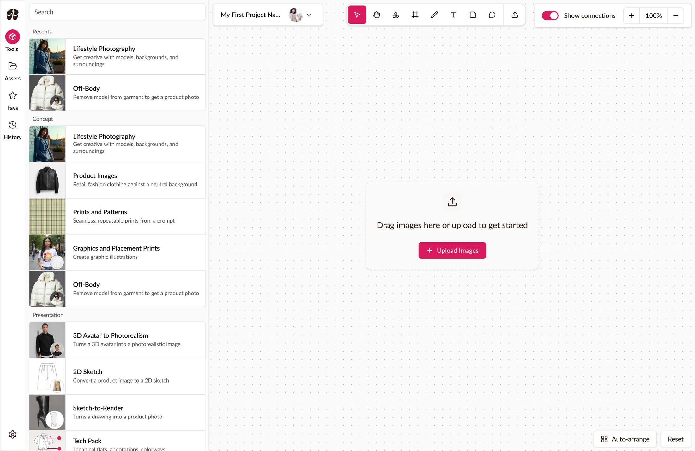
Two problems:
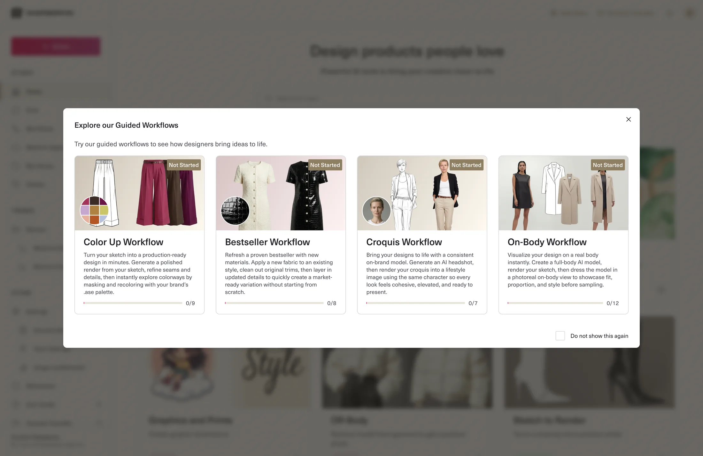
The product is organized by tool, but designers work in workflows. Per-tool tutorials were cheaper and easier to scope, and a map of how tools connect was a middle option. I chose workflow tutorials, one sequence across several tools, because only a sequence shows where Raspberry fits in a designer’s process, as the onboarding call did.
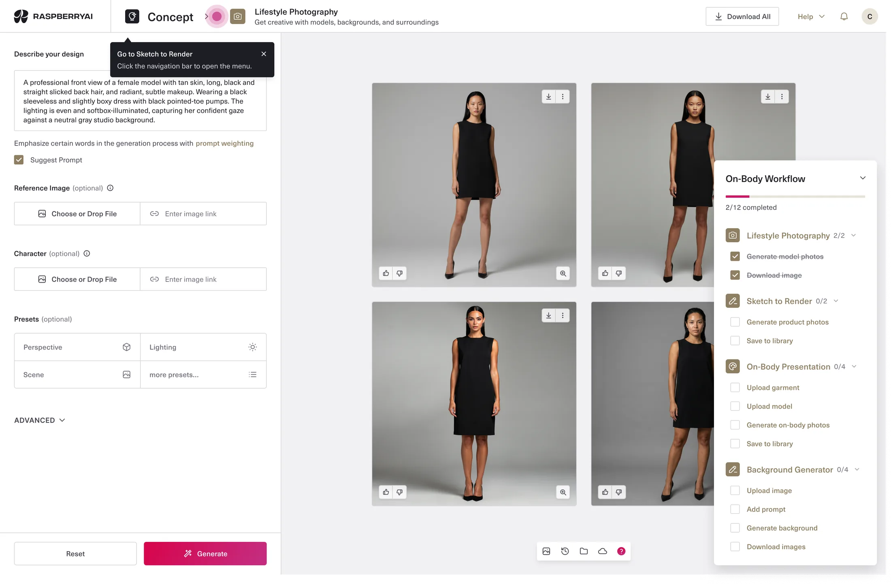
The cost: a tutorial couldn’t live on one screen, so progress had to survive navigation across tools and let designers resume mid-workflow.
With the classic tutorials shipped, the question for Boards was whether the pattern could fit onto a canvas.
I weighed two options: example files, a finished sketch-to-recolor workflow on a board for designers to duplicate and play with, or bringing the classic app’s step-by-step tutorial into Boards, with the same tips as notes.
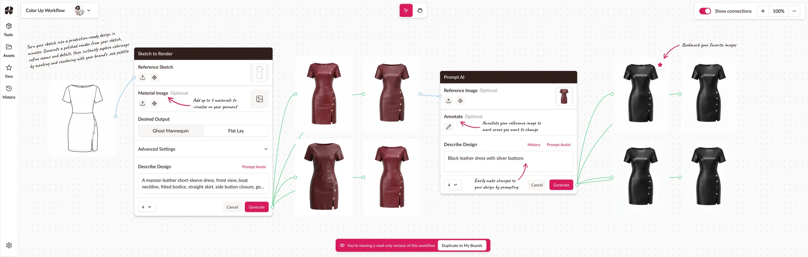
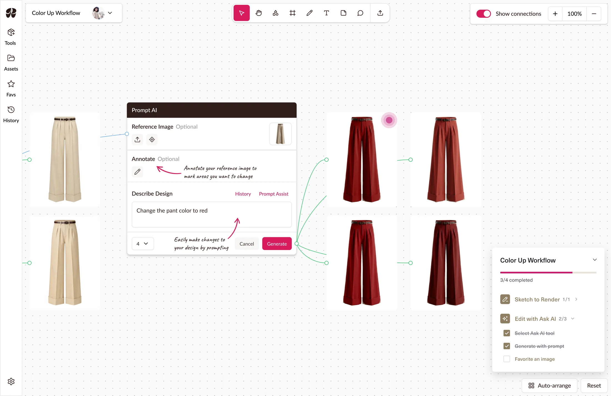
I chose the second: an example file shows a finished workflow, not how to get there, so designers only see what Raspberry can produce, not where it fits in their process.
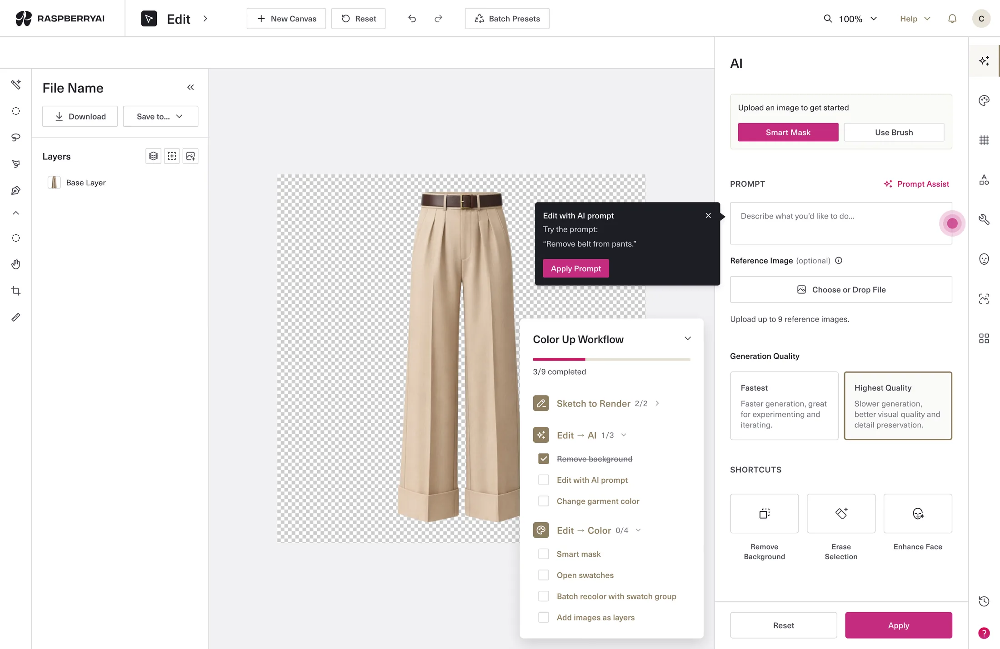
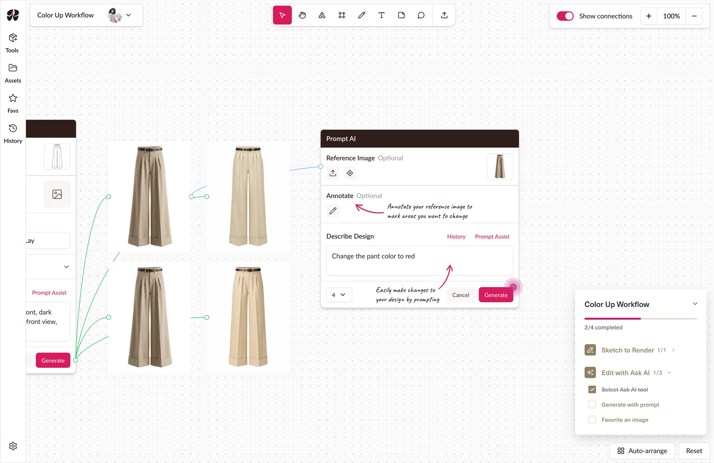
Boards needed something less intrusive than Classic’s tooltips for designers who knew the tools but not the canvas, so I kept the progress tracker and swapped tooltips for canvas notes.
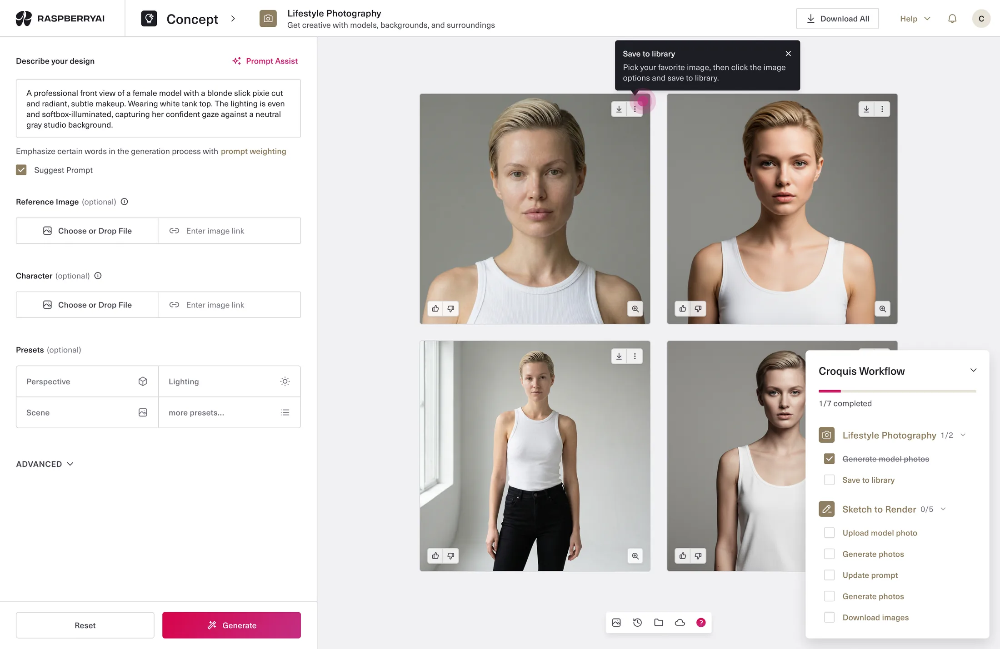
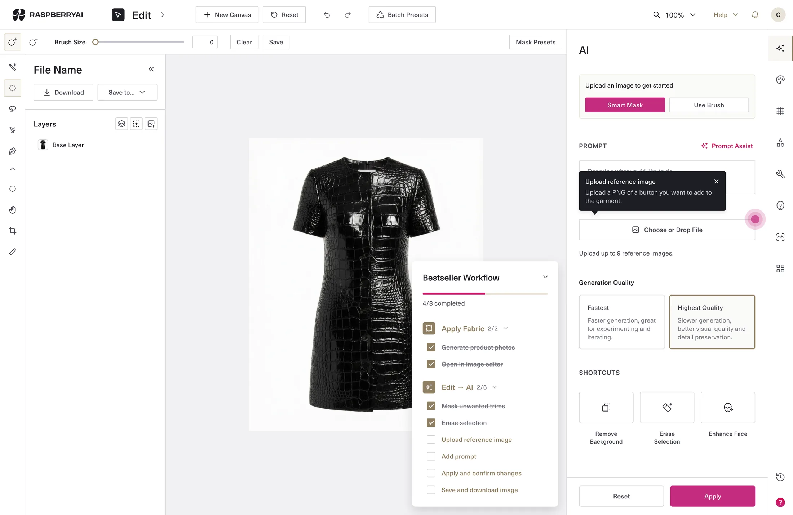
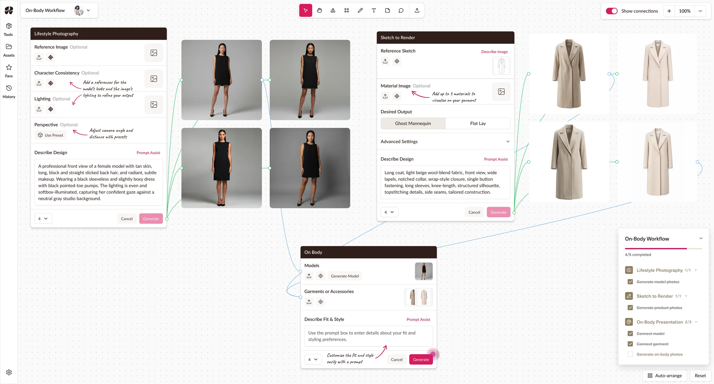
Four workflows run on one pattern in both Classic and Boards (entry point, tracker, step sequence), so a new workflow is content, not new designs, which matters for whoever extends this.
A designer who leaves mid-sequence returns where they left off. Progress carries across the workflow rather than resetting per tool.
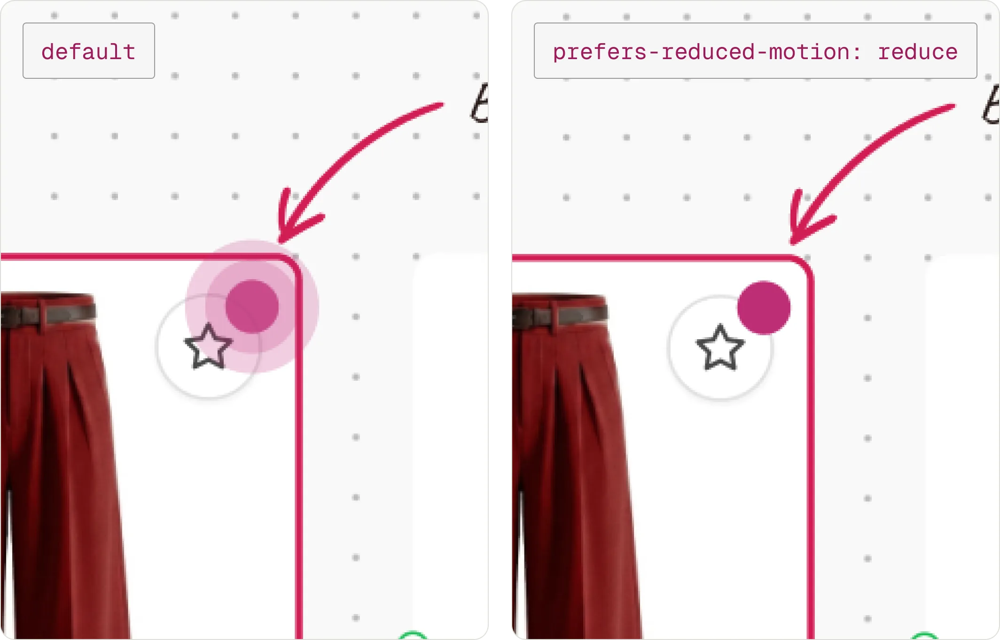
The pulsing indicator drops to a static circle under reduced motion. Tooltip controls stay keyboard-reachable, including dismissal.
We ran handoff as working sessions: I walked the Raspberry team through the prototypes I built with Claude Code, answered questions live, and left annotations where needed.
Everything shipped except the canvas notes, either by decision or because finishing Boards took priority.
In Classic, workflows put separate tools in the context of real fashion design work: of 1,168 who viewed the workflows modal over 90 days, 558 picked a workflow, 382 of those (68.5%) generated, and 204 downloaded. Almost nobody who starts a workflow fails to finish, but half who reach the home page never start one: the sequences hold, the entry point leaks.
Boards has no data yet, but its workflows show how the canvas can support day-to-day work too.
Whether any of this reduced onboarding calls is unanswered, since call volume isn’t in the analytics.
I settled workflow granularity without data. The numbers suggest I worried about the wrong half: the loss is at the entry point, which I designed as a way in, not a way to persuade designers to start. Since cards show step counts, I’d check whether longer workflows get fewer picks, then test fewer, larger steps.

Introduced a new interaction model that keeps fashion designers in context, speeding up their workflow.

Reduced developers’ custom styling by 90% and gave designers the foundation to expand the product.

Turned static signage into voice-guided way-finding, with tailored solutions across app and kiosk.